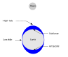

tide
phenomenon

Source: Wikipedia
Wikipedia Page (Something wrong with this association? Let us know.)
Wikidata Page (Something wrong with this association? Let us know.)
Occurs in:
- sea_surface_water_tide_constituents__amplitude
- sea_surface_water_tide_constituent-2mk3__amplitude
- sea_surface_water_tide_constituent-2mk3__angular_speed
- sea_surface_water_tide_constituent-2mk3__period
- sea_surface_water_tide_constituent-2mk3__phase_angle
- sea_surface_water_tide_constituent-2mk3_amphidromic-points__latitude
- sea_surface_water_tide_constituent-2mk3_amphidromic-points__longitude
- sea_surface_water_tide_constituent-2n2__amplitude
- sea_surface_water_tide_constituent-2n2__angular_speed
- sea_surface_water_tide_constituent-2n2__period
- sea_surface_water_tide_constituent-2n2__phase_angle
- sea_surface_water_tide_constituent-2q1__amplitude
- sea_surface_water_tide_constituent-2q1__angular_speed
- sea_surface_water_tide_constituent-2q1__period
- sea_surface_water_tide_constituent-2q1__phase_angle
- sea_surface_water_tide_constituent-2sm2__amplitude
- sea_surface_water_tide_constituent-2sm2__angular_speed
- sea_surface_water_tide_constituent-2sm2__period
- sea_surface_water_tide_constituent-2sm2__phase_angle
- sea_surface_water_tide_constituent-j1__amplitude
- sea_surface_water_tide_constituent-j1__angular_speed
- sea_surface_water_tide_constituent-j1__period
- sea_surface_water_tide_constituent-j1__phase_angle
- sea_surface_water_tide_constituent-k1__amplitude
- sea_surface_water_tide_constituent-k1__angular_speed
- sea_surface_water_tide_constituent-k1__period
- sea_surface_water_tide_constituent-k1__phase_angle
- sea_surface_water_tide_constituent-k2__amplitude
- sea_surface_water_tide_constituent-k2__angular_speed
- sea_surface_water_tide_constituent-k2__period
- sea_surface_water_tide_constituent-k2__phase_angle
- sea_surface_water_tide_constituent-l2__amplitude
- sea_surface_water_tide_constituent-l2__angular_speed
- sea_surface_water_tide_constituent-l2__period
- sea_surface_water_tide_constituent-l2__phase_angle
- sea_surface_water_tide_constituent-lam2__amplitude
- sea_surface_water_tide_constituent-lam2__angular_speed
- sea_surface_water_tide_constituent-lam2__period
- sea_surface_water_tide_constituent-lam2__phase_angle
- sea_surface_water_tide_constituent-m1__amplitude
- sea_surface_water_tide_constituent-m1__angular_speed
- sea_surface_water_tide_constituent-m1__period
- sea_surface_water_tide_constituent-m1__phase_angle
- sea_surface_water_tide_constituent-m2__amplitude
- sea_surface_water_tide_constituent-m2__angular_speed
- sea_surface_water_tide_constituent-m2__period
- sea_surface_water_tide_constituent-m2__phase_angle
- sea_surface_water_tide_constituent-m3__amplitude
- sea_surface_water_tide_constituent-m3__angular_speed
- sea_surface_water_tide_constituent-m3__period
- sea_surface_water_tide_constituent-m3__phase_angle
- sea_surface_water_tide_constituent-m4__amplitude
- sea_surface_water_tide_constituent-m4__angular_speed
- sea_surface_water_tide_constituent-m4__period
- sea_surface_water_tide_constituent-m4__phase_angle
- sea_surface_water_tide_constituent-m6__amplitude
- sea_surface_water_tide_constituent-m6__angular_speed
- sea_surface_water_tide_constituent-m6__period
- sea_surface_water_tide_constituent-m6__phase_angle
- sea_surface_water_tide_constituent-m8__amplitude
- sea_surface_water_tide_constituent-m8__angular_speed
- sea_surface_water_tide_constituent-m8__period
- sea_surface_water_tide_constituent-m8__phase_angle
- sea_surface_water_tide_constituent-mf__amplitude
- sea_surface_water_tide_constituent-mf__angular_speed
- sea_surface_water_tide_constituent-mf__period
- sea_surface_water_tide_constituent-mf__phase_angle
- sea_surface_water_tide_constituent-mk3__amplitude
- sea_surface_water_tide_constituent-mk3__angular_speed
- sea_surface_water_tide_constituent-mk3__period
- sea_surface_water_tide_constituent-mk3__phase_angle
- sea_surface_water_tide_constituent-mm__amplitude
- sea_surface_water_tide_constituent-mm__angular_speed
- sea_surface_water_tide_constituent-mm__period
- sea_surface_water_tide_constituent-mm__phase_angle
- sea_surface_water_tide_constituent-mn4__amplitude
- sea_surface_water_tide_constituent-mn4__angular_speed
- sea_surface_water_tide_constituent-mn4__period
- sea_surface_water_tide_constituent-mn4__phase_angle
- sea_surface_water_tide_constituent-ms4__amplitude
- sea_surface_water_tide_constituent-ms4__angular_speed
- sea_surface_water_tide_constituent-ms4__period
- sea_surface_water_tide_constituent-ms4__phase_angle
- sea_surface_water_tide_constituent-msf__amplitude
- sea_surface_water_tide_constituent-msf__angular_speed
- sea_surface_water_tide_constituent-msf__period
- sea_surface_water_tide_constituent-msf__phase_angle
- sea_surface_water_tide_constituent-mu2__amplitude
- sea_surface_water_tide_constituent-mu2__angular_speed
- sea_surface_water_tide_constituent-mu2__period
- sea_surface_water_tide_constituent-mu2__phase_angle
- sea_surface_water_tide_constituent-n2__amplitude
- sea_surface_water_tide_constituent-n2__angular_speed
- sea_surface_water_tide_constituent-n2__period
- sea_surface_water_tide_constituent-n2__phase_angle
- sea_surface_water_tide_constituent-nu2__amplitude
- sea_surface_water_tide_constituent-nu2__angular_speed
- sea_surface_water_tide_constituent-nu2__period
- sea_surface_water_tide_constituent-nu2__phase_angle
- sea_surface_water_tide_constituent-o1__amplitude
- sea_surface_water_tide_constituent-o1__angular_speed
- sea_surface_water_tide_constituent-o1__period
- sea_surface_water_tide_constituent-o1__phase_angle
- sea_surface_water_tide_constituent-oo1__amplitude
- sea_surface_water_tide_constituent-oo1__angular_speed
- sea_surface_water_tide_constituent-oo1__period
- sea_surface_water_tide_constituent-oo1__phase_angle
- sea_surface_water_tide_constituent-oo2__amplitude
- sea_surface_water_tide_constituent-oo2__angular_speed
- sea_surface_water_tide_constituent-oo2__period
- sea_surface_water_tide_constituent-oo2__phase_angle
- sea_surface_water_tide_constituent-p1__amplitude
- sea_surface_water_tide_constituent-p1__angular_speed
- sea_surface_water_tide_constituent-p1__period
- sea_surface_water_tide_constituent-p1__phase_angle
- sea_surface_water_tide_constituent-q1__amplitude
- sea_surface_water_tide_constituent-q1__angular_speed
- sea_surface_water_tide_constituent-q1__period
- sea_surface_water_tide_constituent-q1__phase_angle
- sea_surface_water_tide_constituent-r2__amplitude
- sea_surface_water_tide_constituent-r2__angular_speed
- sea_surface_water_tide_constituent-r2__period
- sea_surface_water_tide_constituent-r2__phase_angle
- sea_surface_water_tide_constituent-rho__amplitude
- sea_surface_water_tide_constituent-rho__angular_speed
- sea_surface_water_tide_constituent-rho__period
- sea_surface_water_tide_constituent-rho__phase_angle
- sea_surface_water_tide_constituent-s1__amplitude
- sea_surface_water_tide_constituent-s1__angular_speed
- sea_surface_water_tide_constituent-s1__period
- sea_surface_water_tide_constituent-s1__phase_angle
- sea_surface_water_tide_constituent-s2__amplitude
- sea_surface_water_tide_constituent-s2__angular_speed
- sea_surface_water_tide_constituent-s2__period
- sea_surface_water_tide_constituent-s2__phase_angle
- sea_surface_water_tide_constituent-s4__amplitude
- sea_surface_water_tide_constituent-s4__angular_speed
- sea_surface_water_tide_constituent-s4__period
- sea_surface_water_tide_constituent-s4__phase_angle
- sea_surface_water_tide_constituent-s6__amplitude
- sea_surface_water_tide_constituent-s6__angular_speed
- sea_surface_water_tide_constituent-s6__period
- sea_surface_water_tide_constituent-s6__phase_angle
- sea_surface_water_tide_constituent-sa__amplitude
- sea_surface_water_tide_constituent-sa__angular_speed
- sea_surface_water_tide_constituent-sa__period
- sea_surface_water_tide_constituent-sa__phase_angle
- sea_surface_water_tide_constituent-ssa__amplitude
- sea_surface_water_tide_constituent-ssa__angular_speed
- sea_surface_water_tide_constituent-ssa__period
- sea_surface_water_tide_constituent-ssa__phase_angle
- sea_surface_water_tide_constituent-t2__amplitude
- sea_surface_water_tide_constituent-t2__angular_speed
- sea_surface_water_tide_constituent-t2__period
- sea_surface_water_tide_constituent-t2__phase_angle
- sea_water_tide__period
- sea_water_tide__range_of_depth